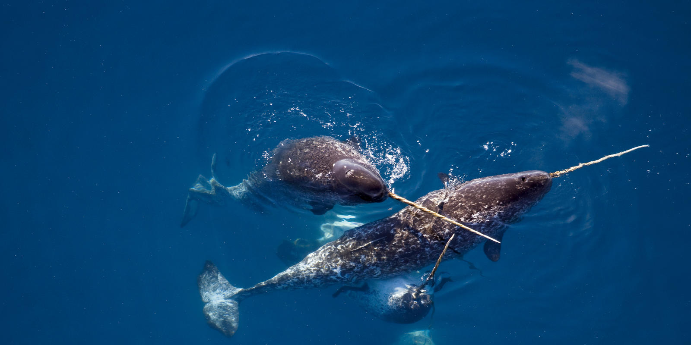
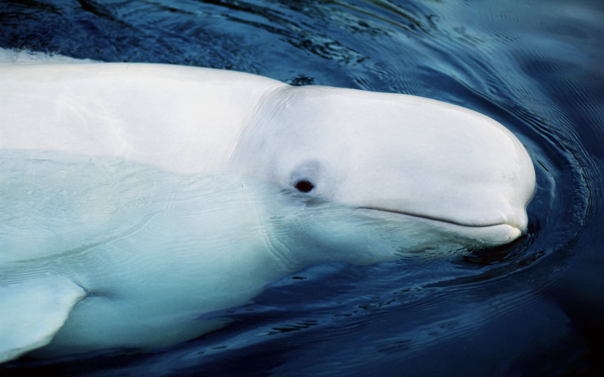

Animals
Polar Bear
 Polar bears are classified as marine mammals because they spend most of their lives on the sea ice of the Arctic Ocean. They have a thick layer of body fat and a water-repellant coat that insulates them from the cold air and water. Considered talented swimmers, they can sustain a pace of six miles per hour by paddling with their front paws and holding their hind legs flat like a rudder.
Polar bears spend over 50% of their time hunting for food. A polar bear might catch only one or two out of ten seals it hunts, depending on the time of year and other variables. Their diet mainly consists of ringed and bearded seals because they need large amounts of fat to survive.
Scientists have divided the total polar bear population into 19 units or subpopulations. Of those, the latest data from the IUCN Polar Bear Specialist Group show that one subpopulation is in decline (Southern Beaufort Sea) and that there is a high estimated risk of future decline due to climate change and data deficiency.
Because of ongoing and potential loss of their sea ice habitat resulting from climate change, polar bears were listed as a threatened species in the US under the Endangered Species Act in May 2008.
The survival and the protection of the polar bear habitat are urgent issues for WWF.
Polar bears are classified as marine mammals because they spend most of their lives on the sea ice of the Arctic Ocean. They have a thick layer of body fat and a water-repellant coat that insulates them from the cold air and water. Considered talented swimmers, they can sustain a pace of six miles per hour by paddling with their front paws and holding their hind legs flat like a rudder.
Polar bears spend over 50% of their time hunting for food. A polar bear might catch only one or two out of ten seals it hunts, depending on the time of year and other variables. Their diet mainly consists of ringed and bearded seals because they need large amounts of fat to survive.
Scientists have divided the total polar bear population into 19 units or subpopulations. Of those, the latest data from the IUCN Polar Bear Specialist Group show that one subpopulation is in decline (Southern Beaufort Sea) and that there is a high estimated risk of future decline due to climate change and data deficiency.
Because of ongoing and potential loss of their sea ice habitat resulting from climate change, polar bears were listed as a threatened species in the US under the Endangered Species Act in May 2008.
The survival and the protection of the polar bear habitat are urgent issues for WWF.
Narwhal
 The narwhal looks like a cross between a whale and a unicorn with its long, spiraled tusk jutting from its head. Males most commonly have tusks, and some may even have two. The tusk, which can grow as long as 10 feet, is actually an enlarged tooth. Ongoing research by WWF collaborators indicates that the tusk has sensory capability, with up to 10 million nerve endings inside. The tusk may also play a role in the ways males exert dominance. Narwhals spend their lives in the Arctic waters of Canada, Greenland, Norway and Russia. The majority of the world’s narwhals winter for up to five months under the sea ice in the Baffin Bay-Davis Strait area (between Canada and western Greenland). Cracks in the ice allow them to breathe when needed, especially after dives, which can be up to a mile and a half deep. They feed mainly on Greenland halibut, along with other fish, squid and shrimp.
Arctic Wolf
 Often called the "polar wolf" or "white wolf," Arctic wolves inhabit the Arctic regions of North America and Greenland. Thanks to its isolation, the Arctic wolf is not threatened by hunting and habitat destruction in the same way as its southern relatives.
Often called the "polar wolf" or "white wolf," Arctic wolves inhabit the Arctic regions of North America and Greenland. Thanks to its isolation, the Arctic wolf is not threatened by hunting and habitat destruction in the same way as its southern relatives.
Gray Whales
 Gray whales have a hump and a ridge of sharp bumps along their backs, instead of a dorsal fin. They are a type of baleen whale, which means they filter food from the water through special bristly structures in their mouths. Gray whales stay close to shore and feed in shallow water. Their well-known migrations take them between feeding and breeding areas, swimming as much as 12,000 miles round trip.
Critically endangered western gray whales migrate into their summer feeding grounds near Sahkalin Island, Russia in late May or early June and return to their winter feeding grounds in the South China Sea in late autumn. Summer feeding grounds for the eastern population lie in the Bering and Chukchi Seas between Alaska and Russia. In the winter, these eastern gray whales migrate south along the west coast of the U.S to Mexico to breed and have their calves.
WWF supports a gray whale research team in the Gulf of California’s San Ignacio Lagoon—one of the best places in the world to see gray whales with their calves. The calm, warm waters of the lagoon are a safe place for young whales, free from predators like killer whales. Locals here affectionately call gray whales "friendly ones" as they have an unusual tendency to approach whale-watching boats and check out the occupants.
Gray whales have a hump and a ridge of sharp bumps along their backs, instead of a dorsal fin. They are a type of baleen whale, which means they filter food from the water through special bristly structures in their mouths. Gray whales stay close to shore and feed in shallow water. Their well-known migrations take them between feeding and breeding areas, swimming as much as 12,000 miles round trip.
Critically endangered western gray whales migrate into their summer feeding grounds near Sahkalin Island, Russia in late May or early June and return to their winter feeding grounds in the South China Sea in late autumn. Summer feeding grounds for the eastern population lie in the Bering and Chukchi Seas between Alaska and Russia. In the winter, these eastern gray whales migrate south along the west coast of the U.S to Mexico to breed and have their calves.
WWF supports a gray whale research team in the Gulf of California’s San Ignacio Lagoon—one of the best places in the world to see gray whales with their calves. The calm, warm waters of the lagoon are a safe place for young whales, free from predators like killer whales. Locals here affectionately call gray whales "friendly ones" as they have an unusual tendency to approach whale-watching boats and check out the occupants.
Beluga
 Belugas are extremely sociable mammals that live, hunt and migrate together in pods, ranging from a few individuals to hundreds of whales. Their bulbous forehead, called a "melon”, is flexible and capable of changing shape. This allows them to make different facial expressions. Belugas can produce a series of chirps, clicks, whistles and squeals, which give the beluga its other name, "the canary of the sea." They may sound like music or even nonsense to us, but to fellow belugas they convey important information. Many populations of belugas migrate as the sea ice changes in the Arctic. They move south in the fall as the ice forms and then return to feed again in the spring, as the ice breaks up. They can also be found near river mouths, and sometimes even venture up river. Belugas feed on a variety of fish species, such as salmon and herring, as well as shrimp, crabs and mollusks.